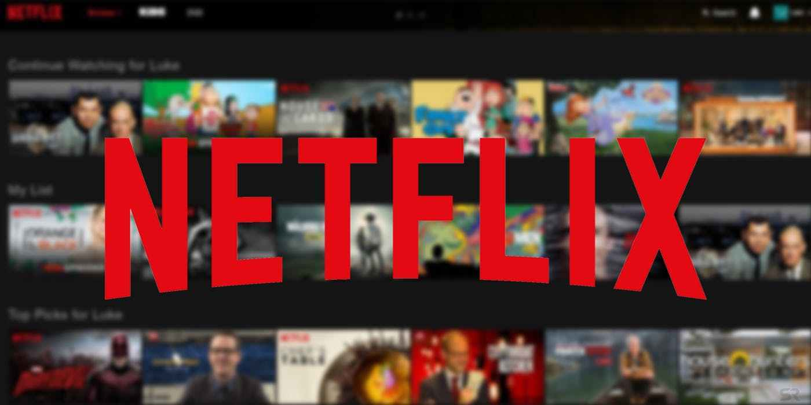
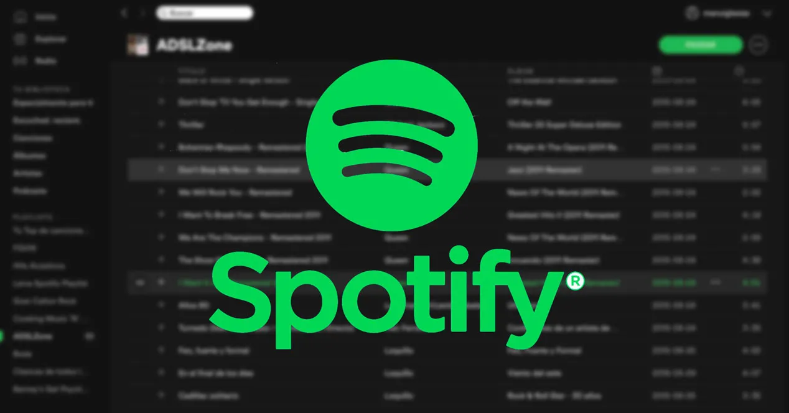
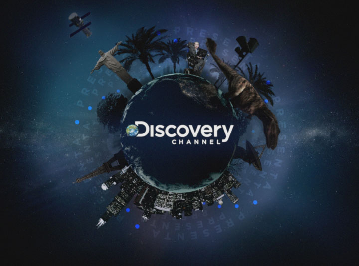
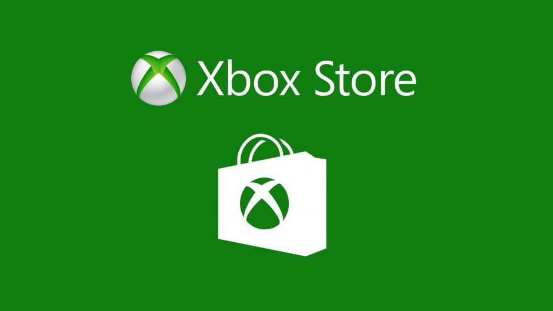

Twitter: Es un sitio web, que me agrada visitar mucho porque gracias a este medio puedo informarme sobre las tendencias que acaba de ocurrir en cualquier lugar minuto a minuto.

Facebook: Es mi sitio web en el que puedo accesar para tener entretenimiento como de risa que me gusta disfrutar en mis tiempos libres.

Instagram: Es una red social es una de mis favoritas, porque encuentro entretenimiento con imagenes diseñadas que tienen tomas espectaculares.
Amazon

Amazon: Es un sitio web en el que puedo comprar diversas cosas; me agrada este sitio porque es de confianza y ademas te da muchas facilidades de pago y puedo conseguir todo lo que me pueda ser satisfacible.
Netflix
Netflix: Está plataforma es un sitio en el que me gusta porque encuentro contenido de entretenimiento en ver series, películas, documentales y entre otras cosas de entretenimiento.
Spotify
Spotify: Es una de mis plataformas en las que me gusta visitar muy a diario porque puedes encontrar diversa variedad de música entre todos los géneros, en la que he conocido de muchos tipos de artistas y grupos.
History Channel
History Channel: Este sitio es uno que me gusta miucho porque suben artìculos e información historicos y sobre todo documentales en que que encuentro temas que me llaman mucho la atención.
Discovery
Discovery Channel: Está plataforma me gusta mucho visitarlo tres veces por semana porque hay documentales e información mundialmente, en especial por los animales, que es lo que más me gusta ver en este sitio.
GitHub

GitHub: Es un sitio en el que me apoyo mucho para poder hacer un desarrollo de un trabajo escolar, además de que es un sitio abierto en el que puedes colabrorar en conjunt.
Xbox Store
Xbox Store: Está aplicación de Xbox, siendo de microsoft, es una de igual manera mis favoritos porque me gustan los videojuegos y aquí encuentro la variedad de juegos que me gustan y que juego hoy en día.
EdTeam
EdTeam: Es un plataforma educativa que te enseña mucho sobre programación, ya que está ligada a la carrera me gusta visitarla porque encuentro temas o nuevas tecnologías que han salido y van desarrollando.